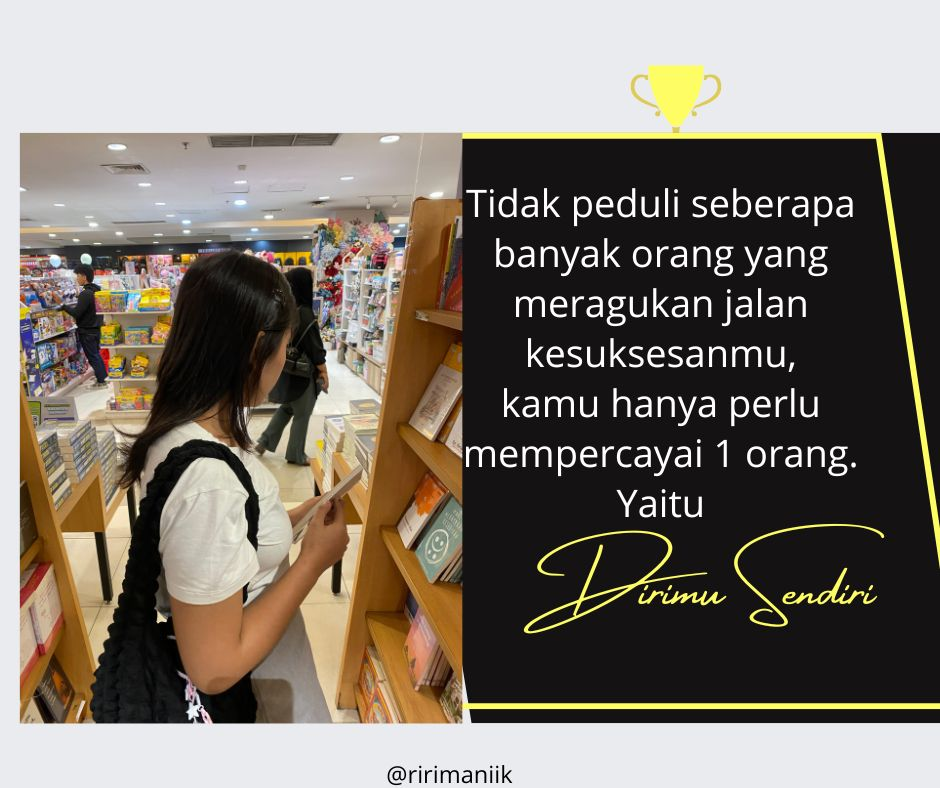

Blog Pribadi
Beranda |
Profil |
Pengalaman Kuliah |
Blog
Daftar Artikel
Pengalaman Belajar di Universitas
Refleksi tentang belajar dan bekerja
Berbagi Pengalaman
Pengalaman Belajar di Universitas

Selama aku kuliah di universitas, saya banyak belajar tentang pentingnya waktu dan bagaimana cara mengelola beban tugas.
Awalnya, saya merasa overwhelmed dengan banyaknya tugas dan ujian. Namun, setelah beberapa bulan, saya belajar untuk menyusun jadwal dan membuat prioritas,
yang sangat membantu dalam mengurangi stres.
"Pendidikan bukanlah persiapan untuk hidup, pendidikan adalah hidup itu sendiri." - John Dewey
Pengalaman ini mengajarkan saya pentingnya kedisiplinan dan cara memanfaatkan waktu dengan bijak.
Refleksi tentang belajar dan bekerja
Belajar dan bekerja bagi saya adalah dua hal yang saling berkaitan.
Setiap proses pembelajaran, baik di dalam maupun di luar kelas, mengajarkan saya tentang pentingnya kesabaran, ketekunan, dan kemampuan untuk beradaptasi dengan situasi baru.
Dalam bekerja, saya belajar bahwa tidak ada pencapaian yang datang tanpa usaha dan kerja keras.
Saya percaya bahwa dengan komitmen untuk terus belajar dan berkembang, baik dalam akademik maupun di dunia profesional,
saya bisa menghadapi tantangan yang ada dan mencapai tujuan yang saya impikan.
"Belajar itu bukan hanya tentang apa yang kamu tahu, tapi bagaimana cara kamu belajar." - Albert Einstein
Berbagi Pengalaman

Menurutku belajar pemrograman itu sulit namun seru juga ketika yang tadinya hanya tulisan yang sulit dimengerti bisa membentuk hal yang sangat indah.
Tantangan terbesar adalah memahami logika di balik kode dan debugging yang sering membuat saya frustasi.
Namun, seiring waktu, saya mulai menikmati proses ini, terutama saat akhirnya berhasil membuat halaman web yang berfungsi dengan baik.
"Kode bukan hanya tentang menulis, tetapi tentang berpikir dan menyelesaikan masalah." - Steve Jobs
Pengalaman ini membentuk pemikiran saya tentang teknologi dan membantu saya untuk terus belajar.
Selain itu saya juga memiliki pengalaman dalam menulis cerita fiksi di platform Wattpad dan juga aktif membuat Alternate Universe (AU) di Twitter.
Kegiatan ini membantu saya mengasah kemampuan menulis, membangun alur cerita yang menarik, serta berinteraksi dengan pembaca secara langsung.